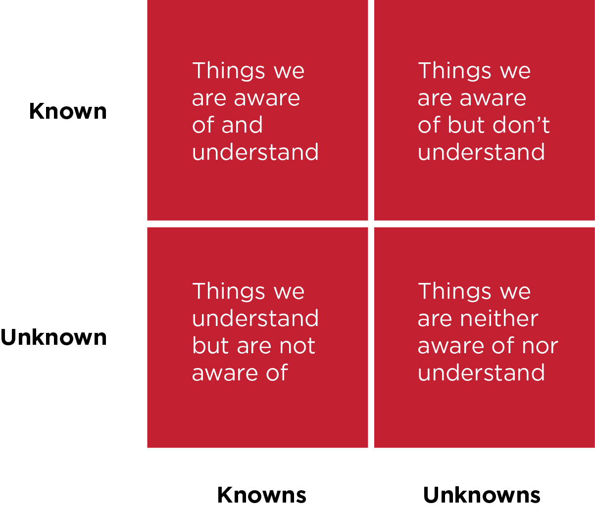

Unit 1, Outcome 1; 1.3 and 1.4
1.3 Plan and carry out tasks using IT – e.g. making your website. How will you plan it?
My plan to create my website;
- Use kanban planning to split up my tasks into smaller chunks. I will use Trello to help me with this Link to my Trello Board
- Decide what the purpose or goal of the site is.
- What content is going to be displayed.
- Develop a structure for the site. Decide what pages are needed and what features they will have.
- Create a mock-up. This is an outline for what the site will eventually look like. The bare bones if you will to give an idea of where navigation will be as well as the format and location of text and images.
- Design the whole site. My site needs both good useability and aesthetics to be a hit. It needs to look visually appealing to the user whilst also being easy for the user to navigate. Easy to read fonts when text is in blocks. It needs to be light and not full of needless images so that it loads up fast. The style and colours need to be kept consistent throughout.
- Finally it needs to be tested. Not only by me but other people so that I get different perspectives and constructive criticism.
1.4 Describe the risks that might impact digital projects – what causes digital projects to fail?
Like any other projects, digital projects are no different in terms of the number of potential risks that could affect them. For example you could be months into a project and close to the end when Apple releases a new iOS which means the site, you have spent time and money on, doesn’t work properly. Another risk during a digital project is that during development your competitor could release their own site that has either better features or better content which will draw all your potential footfall or customers away from your site. Finally you could end up losing a key member or members from your team and with them they take all the ideas or the knowledge of how to do what you are doing and basically put you back right to step one. But the biggest risk is failing to plan for any risks or risk mitigation as it’s called. Below are the types of risk that exist;

- Known/Known (top left quadrant) – We are aware of these during planning and understand what to do should they occur.
- Known/Unknown (top right quadrant) – We are aware of these during planning, but aren’t fully prepared to respond to them.
- Unknown/Known (bottom left quadrant) – We aren’t aware of these, but know how to handle them if they occur.
- Unknown/Unknown (bottom right quadrant) – We aren’t aware of these and don’t know how we would handle them.
A good project should always have the known/known risks built into it, this is what is referred to as Plan B. The hardest part is to be able to plan for the risks that we don’t know.This is down to planning and trying to identify as many unknowns as possible and then factor in how they could be prevented.
Reference Site |